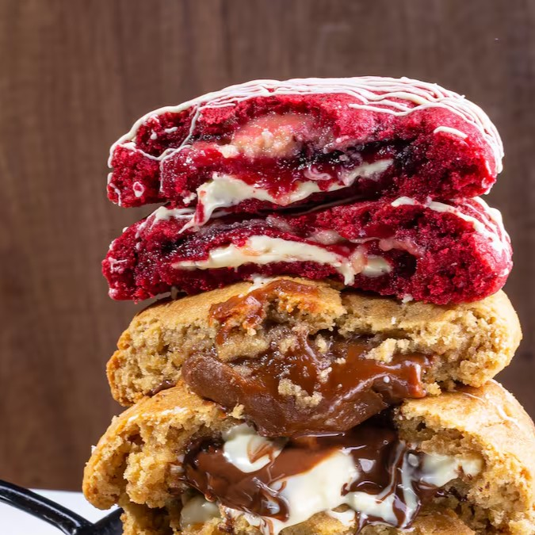
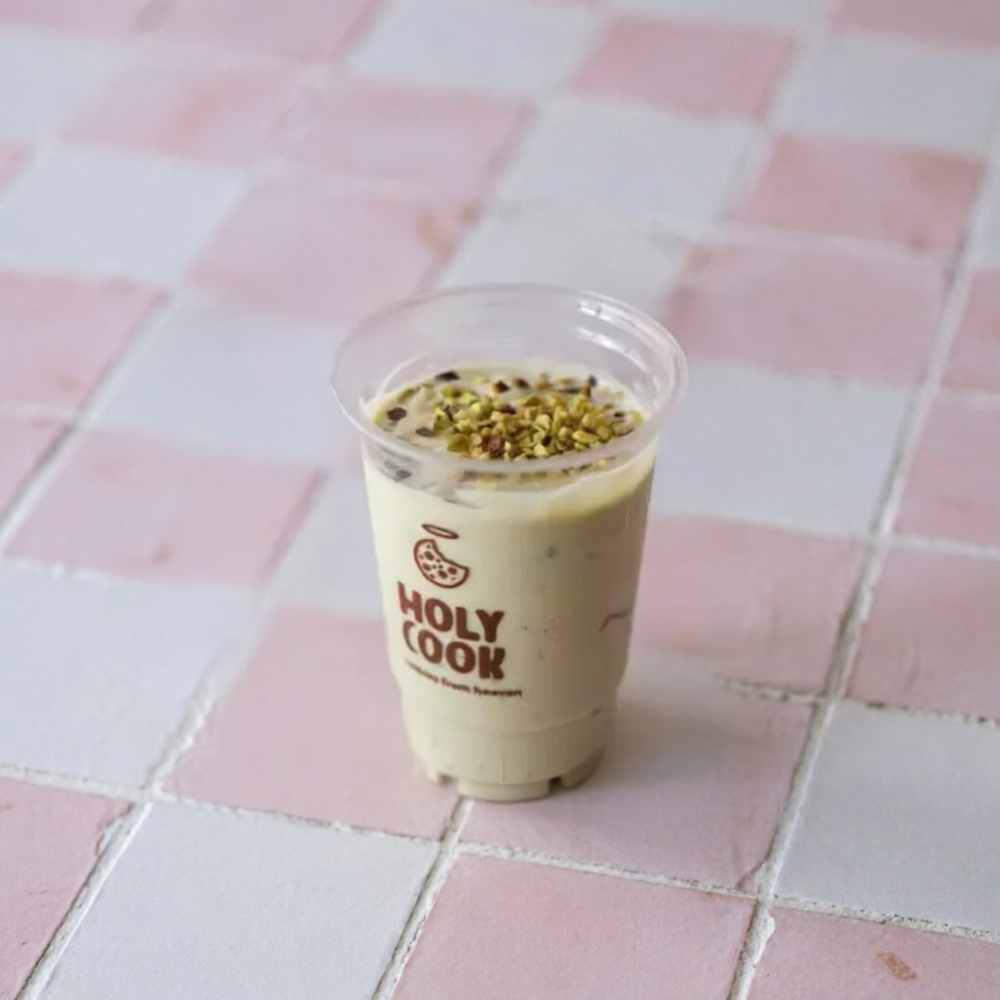
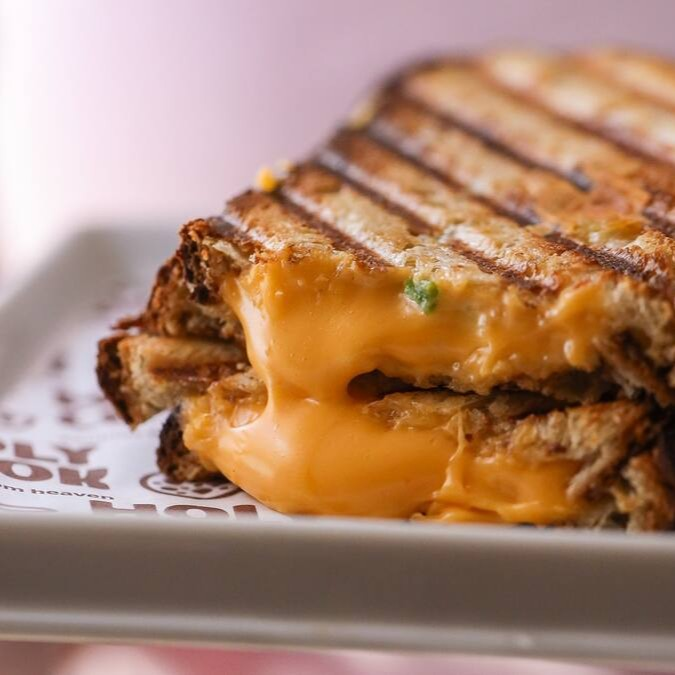

Cookies from heaven
Cada mordida,
um pedaço
do céu.
Tem recheio que abraça.
E cookie que vira seu favorito.
A sua pausa mais gostosa do dia.

É de comer com os olhos. E com vontade.A difícil parte é escolher
Seu próximo
favorito.
Sabores, preços e disponibilidade variam por unidade.


Vem ficar mais um pouquinho.Muito além da primeira mordida
Seu cookie.
Seu café.
Seu momento.
Uma pausa no meio do dia, um encontro sem pressa, um motivo para sair da rotina. Tem sempre um jeito de deixar o dia mais Holy.
Encontre sua combinação
Seja um franqueado